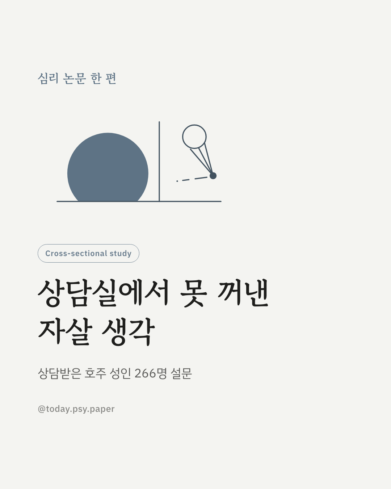
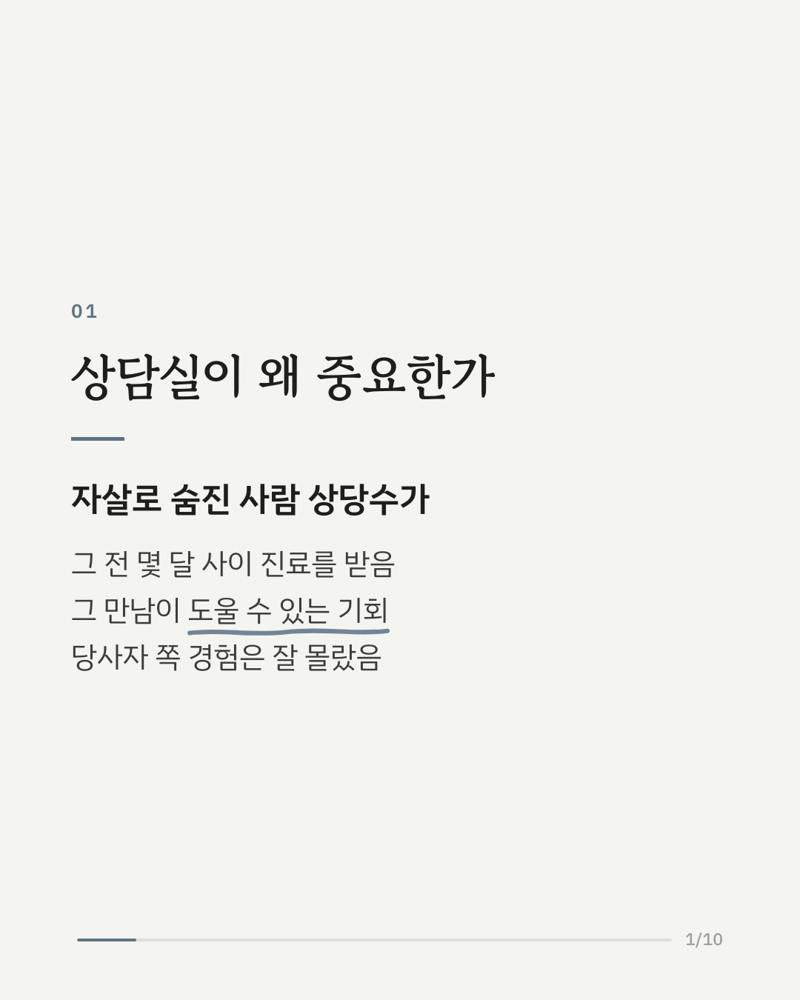
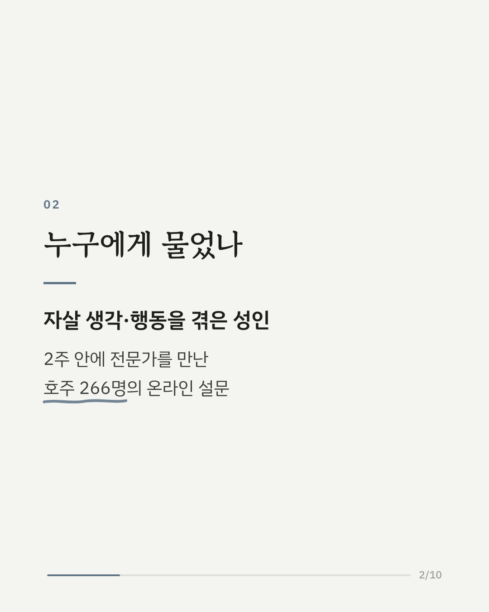
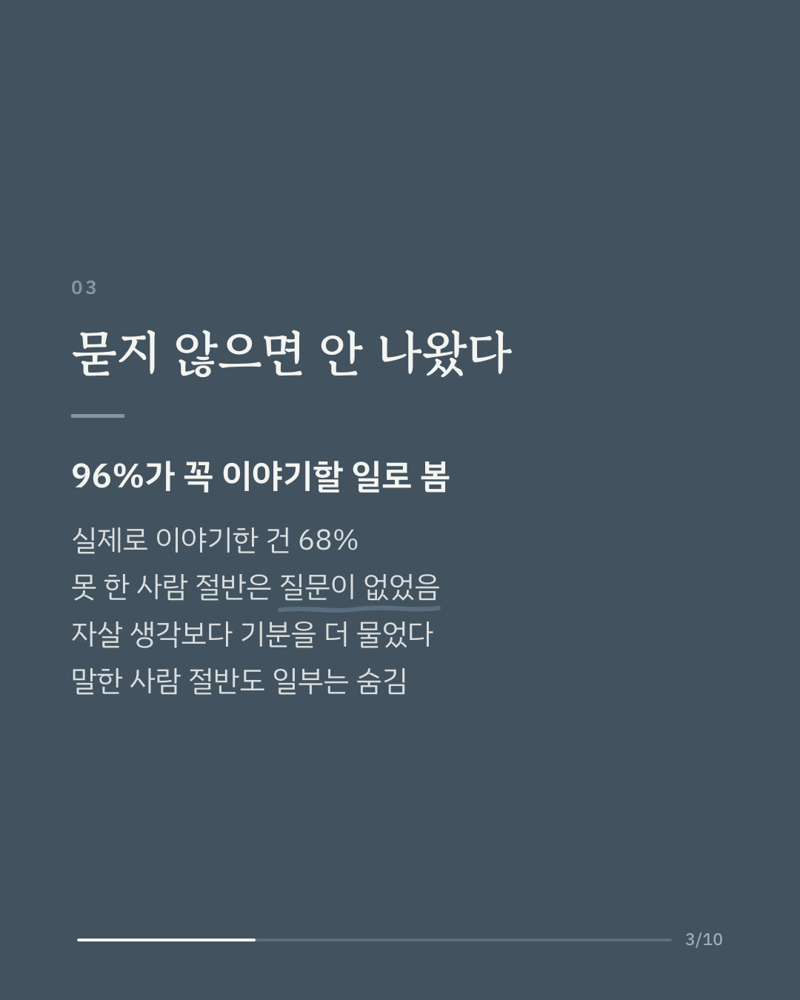
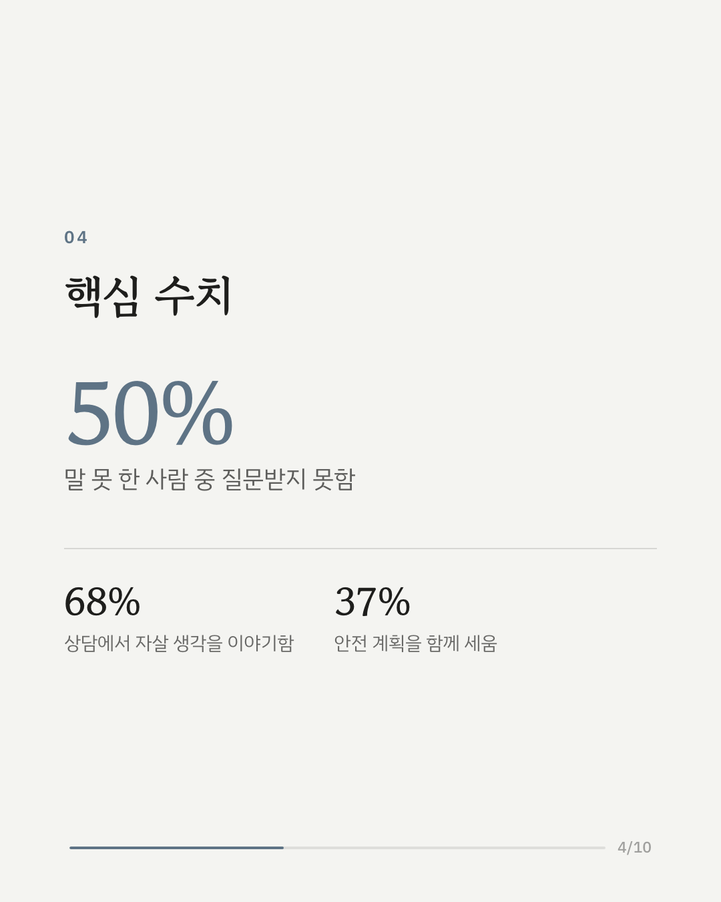
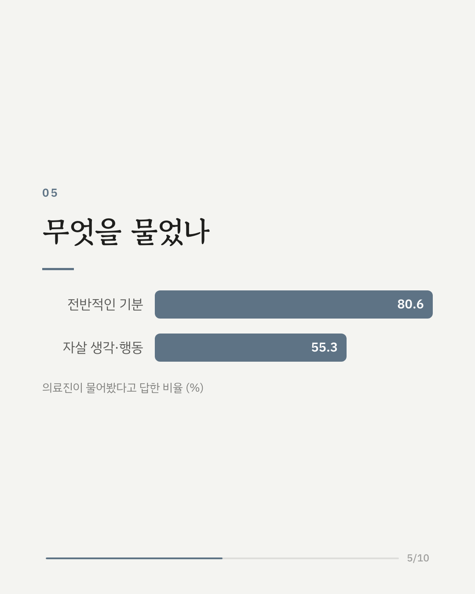
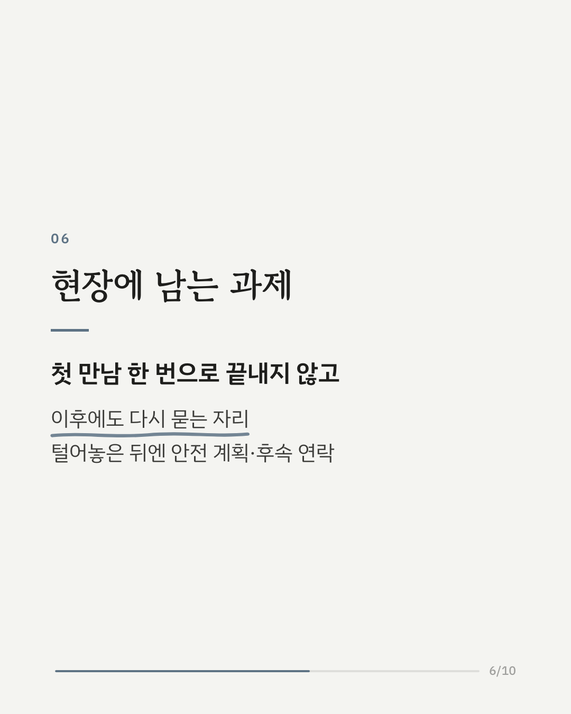
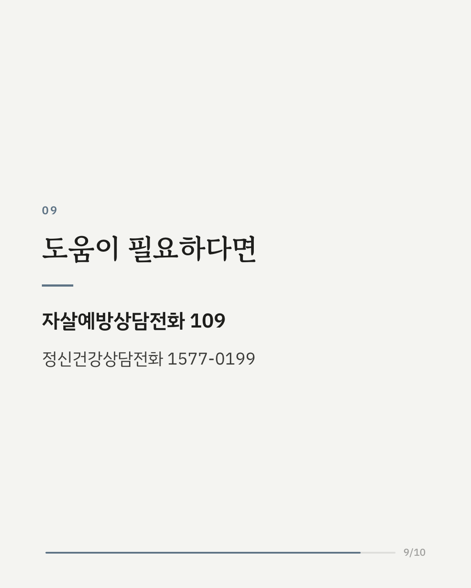
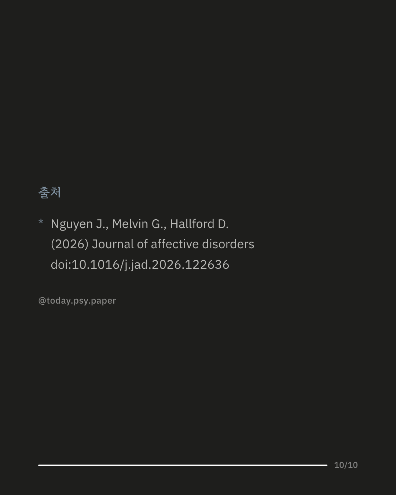

자살 생각이 있는 사람에게 심리상담 시간은 위기를 알아차리고 도울 수 있는 중요한 기회입니다. 이 연구는 최근 2주 안에 정신건강 전문가를 만난 호주 성인 266명에게, 그 상담에서 자살 생각과 행동을 어떻게 이야기했는지 물었습니다. 참가자의 96%가 이 이야기를 나누는 것이 중요하다고 답했지만, 실제로 이야기한 사람은 68%였습니다. 이야기하지 못한 사람의 절반은 질문을 받지 못했다고 답했습니다. 의료진은 전반적인 기분(81%)을 자살 생각(55%)보다 더 자주 물었고, 이야기한 사람 중 절반가량은 일부를 말하지 않고 남겨 두었습니다. 안전 계획을 세우거나 후속 연락을 받은 사람은 열 명 중 네 명이 채 되지 않았지만, 상담에 만족한다는 응답은 75%였습니다. 연구진은 첫 만남 이후에도 다시 물을 기회를 만들고, 털어놓은 뒤에는 그에 맞는 돌봄으로 이어 가야 한다고 제안합니다. 다만 참가자의 기억에 기댄 온라인 설문이라 실제 상담 내용과는 다를 수 있습니다. Journal of Affective Disorders (2026), 'Recent clinical encounters for suicidal thoughts and behaviours: Disclosure, assessment, missed opportunities, and implications for practice' 힘든 마음이 들 때는 자살예방상담전화 109, 정신건강상담전화 1577-0199에서 도움을 받을 수 있습니다. DOI: 10.1016/j.jad.2026.122636 #임상심리 #정신건강정보 #심리학연구 #논문리뷰 #자살예방 #심리상담 #상담심리
python3 publish.py 42880604